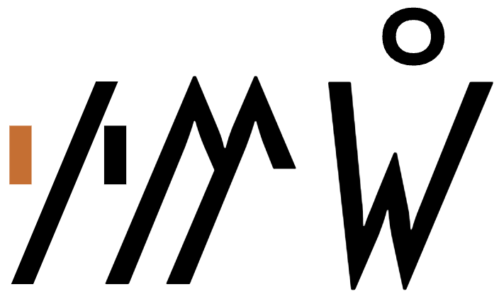

This page brings together basic information about the Rejang script and its use for the Rejang language. It aims to provide a brief, descriptive summary of the modern, printed orthography and typographic features, and to advise how to write Rejang using Unicode.
Source: Article 1 of the Universal Declaration of Human Rights, in Omniglot
Usage & history
18thC – today, but with limited usage currently
Phoenician?
└ Aramaic?
└ Brahmi
└ Tamil-Brahmi
└ Pallava
└ Old Kawi
└ Recong
└ Rejang
+ Kerinci
+ Lembak
+ Serawai
+ Pasemah
+ Lampung
The Rejang language is a set of dialects with approximately 350,000 speakers in Bengkulu and South Sumatran provinces of Sumatra, Indonesia. The Rejang (or Kagagna) script corpus consists chiefly of traditional ritual texts, spells and incantations, and love poems. Some closely guarded epics are written on bark cloth, bamboo, rattan, buffalo horn and lost copper plates.d,477 The use of the Rejang script has been largely superceded by the Latin orthography since the 1960s.o
ꥆꤰ꥓ꤼꤽ ꤽꥍꤺꥏ
In use prior to the introduction of Islam to the Rejang areawl, the earliest attested document appears to date from the mid-18th century CE. It's decline may be related to its lack of compatibility with Arabic sounds. It was traditionally written on bamboo, buffalo horn, bark or copper plates.ws
The Rejang script is an abugida, ie. each consonant contains an inherent vowel sound. See the table to the right for a brief overview of features for the modern Rejang orthography.
Rejang text runs left-to-right in horizontal lines. There is no case distinction. Words may or may not be separated by spaces.
Rejang represents native consonant sounds using 18 basic letters and 4 prenasalised letters. Onsets appear to be simple, but codas can be written either with a full letter plus the vowel killer A953. or using one of 4 dedicated combining marks.
Although Rejang has a 'virama' character, it doesn't produce shaping effects on consonant clusters, and there are no conjuncts or stacking.
a following a consonant is not written, but is seen as an inherent part of the consonant letter, so ka is written by simply using the consonant letter.
Combining marks used for vowels
ꤰꥈ
kuU+A930 REJANG LETTER KA + U+A948 REJANG VOWEL SIGN U
Rejang uses the following dedicated combining marks for vowels. They are all vowel signs.
ꥇ␣ꥈ␣ꥉ␣ꥋ␣ꥍ␣ꥎ␣ꥊ␣ꥌ
All vowel signs are typed and stored after the base consonant, and the glyph rendering system takes care of the positioning at display time. The glyphs used to represent vowels, whether alone or in multipart vowels, are arranged around a syllable onset, which may be 2 consonants, rather than just around the immediately preceding consonant. See prebase.
Vowel letters
Rejang has only one dedicated vowel letter. It is used for standalone vowels.
ꥆ
Pre-base vowel signs
ꤰꥇ
kiU+A930 REJANG LETTER KA + U+A947 REJANG VOWEL SIGN I
ꥇ␣ꥉ␣ꥋ
Three of the combining marks used for vowel sounds appear to the left of the base consonant letter or cluster when rendered.

A pre-base vowel sign (highlighted). It is positioned to the left of the consonant after which it is typed, stored, and pronounced.show composition
ꤷꥉꤼꥉꤿ꥓
This combining mark is always typed and stored after the base consonant. The rendering process places the glyph before the base consonant at the time of display.
Circumgraph
ꤰꥋ
kiU+A930 REJANG LETTER KA + U+A94B REJANG VOWEL SIGN O
Rejang has only a single vowel sign that produces glyphs on more than one side of the base character.
ꥋ
Like pre-base glyphs, these are combining marks that are always stored after the base consonant. When rendered, the code point produces multiple glyphs, which are placed on different sides of the base consonant. Click on fig_circumgraphs to see the sequence of characters in storage.
A circumgraph. The vowel stored after the consonant as a single character in memory is rendered with separate glyphs on 2 sides of the base.show composition
ꤷꥇꥆꥋꥆ
Standalone vowels
ꥆꥇ
iU+A946 REJANG LETTER A + U+A947 REJANG VOWEL SIGN I
Standalone vowels in Rejang are written using ꥆ followed by a vowel sign. On its own, that letter represents a.
ꥆꤲꥇꥐ
ꤷꥇꥆꥋꥆ
Vowel absence
A consonant that is not followed by a vowel is marked using A953. This includes syllable-final consonants. There are no conjuncts.
ꥆꤼꥉꤶ꥓
ꥆꤰ꥓ꤼꤽ
This combining mark is called a virama, but it is not the kind of virama that produces shaping changes, and it is always visible.
Consonants
Consonant summary table
The following table summarises the main consonant to character assigments.
The left column is lowercase, and the right uppercase.
Stops
ꤶ␣ꤷ␣ꤳ␣ꤴ␣ꤹ␣ꤺ␣ꤰ␣ꤱꥂ␣ꥄ␣ꥅ␣ꥃ
Fricatives
ꤼ␣ꥁ
Nasals
ꤸ␣ꤵ␣ꤻ␣ꤲ
Approximants
trills & flaps
ꥀ␣ꤽ␣ꤾ␣ꤿ
Finals
ꥒ␣ ␣ꥐ␣ꥏ␣ ␣ꥑ
Basic consonants
Whereas the table just above takes you from sounds to letters, the following simply lists the basic consonant letters (however, since the orthography is highly phonetic there is little difference in ordering).
ꤶ␣ꤷ␣ꤳ␣ꤴ␣ꤹ␣ꤺ␣ꤰ␣ꤱ␣ ␣ꤼ␣ꥁ␣ ␣ꤸ␣ꤵ␣ꤻ␣ꤲ␣ ␣ꥀ␣ꤽ␣ꤾ␣ꤿ
Prenasalised consonants
Four consonant letters represent prenasalised sounds.
ꥂ␣ꥃ␣ꥄ␣ꥅ
Onsets
Rejang onsets appear to be simple consonants or prenasalised consonants.
Finals
Syllable-final consonants can be written in 2 ways.
Some codas are written with a consonant plus A953.
ꤸꥇꤵꥈꤸ꥓
ꥆꤼꥉꤶ꥓
Other codas use one of the following 4 combining marks.
ꥒ␣ ␣ꥐ␣ꥏ␣ ␣ꥑ
It is noteworthy that 2 of these combining marks appear to the left of the consonant glyph when rendered. However, as for all combining marks, they are typed and stored after the consonant.
ꥆꥀꥐ
ꤷꥇꤳꥏ
Consonant clusters
Consonant clusters are indicated where a consonant letter is followed by A953 (see novowel), or when a final consonant combining mark is followed by another syllable (see finals). There are no conjunct forms.
Encoding choices
This section offers advice about characters or character sequences to avoid, and what to use instead. It takes into account the relevance of Unicode Normalisation Form D (NFD) and Unicode Normalisation Form C (NFC)..
Although usage is recommended here, content authors may well be unaware of such recommendations. Therefore, applications should look out for the non-recommended approach and treat it the same as the recommended approach wherever possible.
False friends
The following atomic character looks as if it could be composed of parts, but in fact there is no equivalence during normalisation, and so the atomic characters only should be used.
Atomic
Sequence ( DO NOT use! )
A94B
A949 A948
Codepoint sequences
Where present, characters in a syllable should always occur in the following order.
A consonant.
A vowel or virama.
A final consonant combining mark.
Numbers
Digits
Rejang uses ASCII digits
.
Text direction
Rejang text runs left to right in horizontal lines.
Rejang letters don't interact, so no special shaping is needed.
Base characters can carry multiple combining marks when both a vowel sign and final consonant apply.
Some small adjustments may be needed for the placement of combining marks relative to the base letter, but generally they occupy distinct locations and so don't collide.
Graphemes
Graphemes in Rejang consist of single letters or letters with one or two combining marks. This means that text can be segmented into typographic units using grapheme clusters.
Phrase, sentence, and section delimiters are described in phrase.
Punctuation & inline features
Word boundaries
Inter-word spacing can be found in more modern texts, but traditional texts may contain no word breaks.
Phrase & section boundaries
,␣:␣.␣꥟
Comma, full stop, and colon ASCII characters have been observed for inline punctuation marks.me One native character is used at the paragraph level.
phrase
,
:
sentence
.
paragraph
꥟
꥟ is used at the beginning and end of a paragraphme.
Line & paragraph layout
Line breaking & hyphenation
More information is needed about whether lines are broken between words or syllables, but no line breaks occur within a syllable.
Line-edge rules
As in almost all writing systems, certain punctuation characters should not appear at the end or the start of a line. The Unicode line-break properties help applications decide whether a character should appear at the start or end of a line.